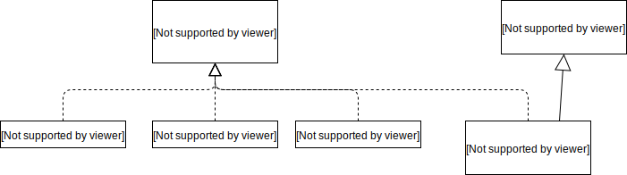
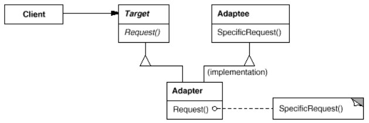
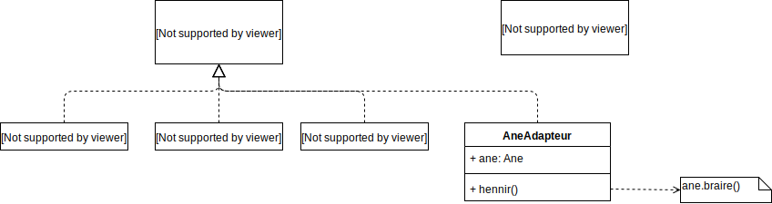

Convertit l'interface d'une classe en une interface attendue par les clients.
Dans le cas le plus simple, sert à faire collaborer 2 systèmes qui font (plus ou moins) les mêmes choses avec 2 vocabulaires différents.
Exemple
(code dans Chevaux1.java).On a un programme qui manipule différents types de chevaux :
ChevalDeCamargue, ChevalArabe, PoneyShetland.
Tous ces chevaux implémentent l'interface
Cheval :
interface Cheval{
public void hennir();
}
On peut par exemple les utiliser de cette manière :
public static void main(String[] args){
Cheval[] chevaux = {
new ChevalDeCamargue(),
new ChevalArabe(),
new PoneyShetland(),
};
for(Cheval cheval : chevaux){
cheval.hennir();
}
}
On nous fournit une classe Ane
class Ane{
public void braire(){
System.out.println("hi han");
}
}
Comment faire pour utiliser un âne de la même manière qu'on utilise un cheval ?
Pouvoir écrire du code du genre :
Cheval[] chevaux = {
new ChevalDeCamargue(),
new ChevalArabe(),
new PoneyShetland(),
new Ane(),
};
Le pattern Adapter permet de répondre à cette question.
Utilisation de l'héritage
(code dans Chevaux2.java).La classe
AneAdapter dérive de Ane et implémente en plus Cheval
class AneAdapter extends Ane implements Cheval{
public void hennir(){
braire();
}
}
La classe AneAdapter absorbe la différence entre Ane et Cheval grâce à l'héritage.
A l'utilisation :
Cheval[] chevaux = {
new ChevalDeCamargue(),
new ChevalArabe(),
new PoneyShetland(),
new AneAdapter(),
};
Note : Ce type d'adapter est parfois appellé class adapter.
Structure
 La présentation classique (gof) utilise l'héritage : 
Exercice : Identifiez
Cheval, Ane et AneAdapter dans le schéma gof.
Utilisation de la composition
(code dans Chevaux3.java).On crée une classe
AneAdapter qui implémente l'interface Cheval et qui contient un Ane.
(noter que le constructeur de
AneAdapter prend un Ane en paramètre).
class AneAdapter implements Cheval{
private Ane ane;
public AneAdapter(Ane ane){
this.ane = ane;
}
public void hennir(){
ane.braire();
}
}
La classe AneAdapter absorbe la différence entre Ane et Cheval grâce à la composition.
Cela permet d'utiliser un
AneAdapter chaque fois qu'on veut faire passer un âne pour un cheval :
Cheval[] chevaux = {
new ChevalDeCamargue(),
new ChevalArabe(),
new PoneyShetland(),
new AneAdapter(new Ane()),
};

Note : Ce type d'adapter est parfois appellé object adapter.
Remarques
Certains adapteurs peuvent être plus complexes, cela va de la simple traduction de vocabulaire à l'implémentation de fonctionnalités.Dépend du degré de similitude entre
Target et Adaptee.
Le classe
Adaptee contient l'implémentation, c'est elle qui fait le travail.
ATTENTION : la classe
Adapter ne répète pas l'implémentation de Adaptee mais la réutilise.
Exercice : Adapter Pile / Stack
Exercice : Adapter Menu